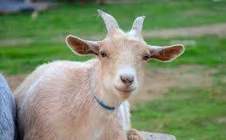
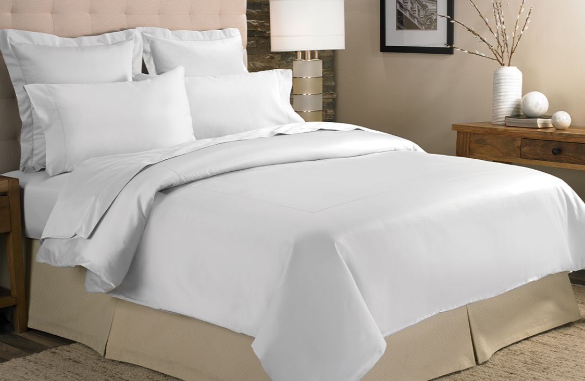
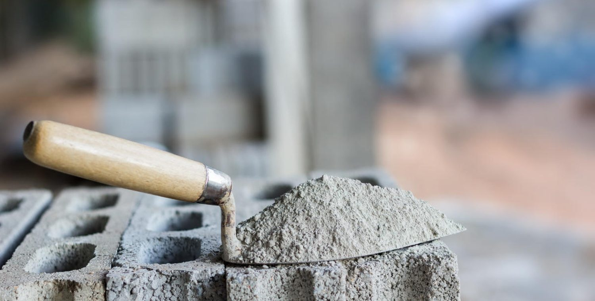
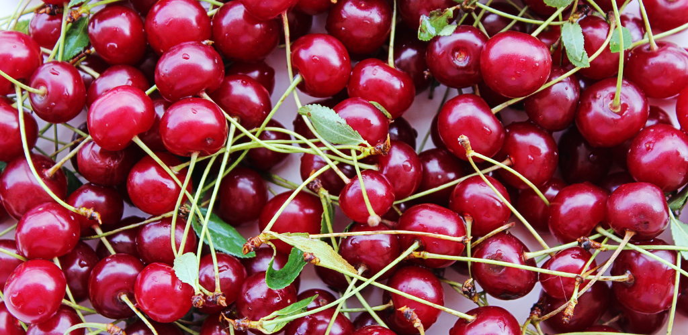
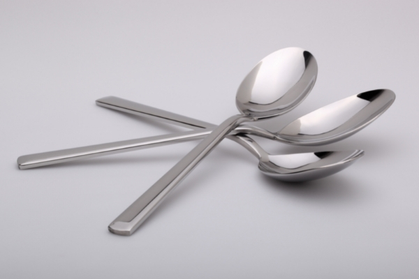

Introducción:
En esta página encontraremos las palabras más comunes para la letra C
-
Cabra: Mamífero rumiante doméstico, como de un metro de altura, muy ágil para saltar y subir por lugares escarpados, con pelo corto, áspero y a menudo rojizo, cuernos vueltos hacia atrás, un mechón de pelos largos colgante de la mandíbula inferior y cola muy corta.

-
Cama: Mueble destinado a que las personas se acuesten en él, compuesto de una armazón, generalmente con patas, sobre la que se colocan un somier o tabla, un colchón, almohada y diversas ropas.

-
Cemento: Mezcla formada de arcilla y materiales calcáreos, sometida a cocción y muy finamente molida, que mezclada a su vez con agua se solidifica y endurece.

-
Cereza: Fruto del cerezo. Es una drupa con cabillo largo, casi redonda, de unos dos centímetros de diámetro, con surco lateral, piel lisa de color encarnado más o menos oscuro, y pulpa muy jugosa, dulce y comestible.

-
Cuchara: Utensilio que se compone de una parte cóncava prolongada en un mango, y que sirve, especialmente, para llevar a la boca cosas líquidas, blandas o menudas.
